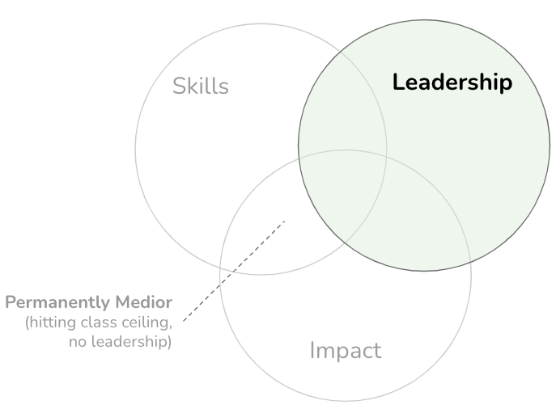

A Framework for Architecture Leadership: Empowering with Insight and Influence
IN THIS SECTION, YOU WILL: Understand how to apply ideas from David Marquet’s work and Netflix’s valued behaviors to develop architects’ leadership traits.
KEY POINTS:
- My view of architecture leadership is inspired by David Marquet’s work and Netflix’s valued behaviors.
- Marquet focused on leadership and organizational management, particularly emphasizing the principles of Intent-Based Leadership.
- Borrowing from Netflix’s original values, I see the following behavioral traits as crucial for architects: communication, judgment, impact, inclusion, selflessness, courage, integrity, curiosity, innovation, and passion.
“A leader is anyone who takes responsibility for recognizing the potential in people and ideas, and has the courage to develop that potential.” –Brené Brown
When I think about architecture leadership, two key influences really stand out for me: David Marquet’s leadership principles and the Netflix Culture Memo. Marquet’s insights from his books, Turn the Ship Around! and Leadership Is Language, really hit home.
He emphasizes some key ideas:
- Empowering everyone: It’s about giving people at every level the authority to make decisions.
- Clarity of intent: Clearly communicating what’s expected can really help everyone stay aligned.
- Decentralized decision-making: Letting teams make their own calls fosters ownership and accountability.
- Servant leadership: Supporting others in their growth is crucial.
- Continuous improvement: Always looking for ways to get better keeps innovation alive.
On the flip side, Netflix brings a fresh perspective with its Culture Memo. It lays out practical ways to nurture leadership traits across the board, not just for those in management roles. They promote values like curiosity, good judgment, courage, and the importance of speaking up to help each other grow.
Combining Marquet’s and Netflix’s approaches gives us a solid, modern framework for leadership that really fits the needs of today’s IT architecture. It’s all about cross-functional influence, finding clarity in complex situations, and leading effectively without relying solely on a hierarchy.
 Figure 1: Architecture rests on three key pillars: skills, impact, and leadership. Without that leadership element, even the most skilled architects can feel stuck, struggling to scale their influence or drive meaningful change within their organizations.
David Marquet’s Work: The Leader-Leader Model
One of the most impactful leadership concepts I’ve come across is David Marquet’s Leader-Leader approach. He dives deep into this idea in his books, Turn the Ship Around! and Leadership Is Language. What really sets this model apart is how it flips traditional leadership on its head. Instead of authority resting solely at the top, the Leader-Leader model encourages a shared sense of responsibility and invites initiative from everyone on the team.
At its essence, Marquet’s model is built on a powerful belief: everyone has the potential to be a leader. Rather than relying on a single person to call all the shots, the team collaborates and shares authority to reach common goals. This creates a culture where individuals feel empowered to take ownership of their work, speak up, and act with confidence.
For architects, this means stepping away from the habit of being the “go-to person” for every decision. Instead, they can become facilitators, coaches, and mentors—empowering their teams while still guiding overall architectural direction. This shift not only builds the team’s capacity but also fosters trust and strengthens execution.
Building a Collaborative Culture
One of the standout features of the Leader-Leader model is how it nurtures inclusion, accountability, and creativity. When everyone is encouraged to contribute their unique perspectives and skills, teams become more collaborative and resilient. Ownership is shared, and success is celebrated as a collective achievement.
“I Intend To”: A Small Phrase with Big Impact
In Leadership Is Language, Marquet emphasizes that the language we use matters a lot in leadership. He introduces the phrase “I intend to” as a replacement for passive, permission-seeking language. Instead of saying, “Can I do this?”, team members can confidently assert, “I intend to do this.” This shift helps clarify intent and empowers individuals to take initiative.
This simple phrase can transform team dynamics in a big way.
“I have found the phrase ‘I intend to’ to be a powerful catalyst for positioning architecture work.”
 Figure 2: Leadership language, based on Intent-Based Leadership by David Marquet.
Figure 2: Leadership language, based on Intent-Based Leadership by David Marquet.
When architects adopt this language themselves and encourage their teams to do the same, they help cultivate a culture rich in clarity, action, and mutual accountability. It sets the expectation that everyone is expected to lead, while architects are there to guide, support, and elevate the team’s efforts.
Applying Leader-Leader Thinking in Architecture and Engineering
The Leader-Leader model isn’t just a theoretical framework—it works wonders in real-world engineering settings. Here are some concrete examples where this approach shines:
-
Empowering Teams in Agile Environments
In Agile teams, everyone has a seat at the table when it comes to decision-making. Developers, testers, and product owners collaborate to contribute meaningfully, rather than simply following orders. -
Cross-Functional DevOps Collaboration
DevOps fosters a culture of ownership throughout the product lifecycle. Teams manage everything from development to deployment, which aligns perfectly with the Leader-Leader philosophy. -
Driving Continuous Improvement
DevOps also emphasizes learning through iteration. Instead of leaders controlling every decision, they coach their teams to improve through feedback loops, retrospectives, and experimentation. -
Mentorship as Leadership
Senior architects can take on a mentoring role, guiding junior members through architectural challenges while empowering them to make their own decisions and grow in confidence. -
Community-Driven Leadership in Open Source
Open-source projects demonstrate that leadership can be earned through contribution, not titles. Teams collaborate openly, review code together, and make decisions as a unified group—another great example of distributed authority. -
Autonomy in Microservices Architecture
Teams have ownership of their services from design to deployment and support. They can make decisions independently but work together for overall success. -
“You Build It, You Run It” Service Ownership
Teams that adopt this philosophy take responsibility for the long-term quality and reliability of their work, which fosters pride in ownership and motivates ongoing improvement.
Leader-Leader Model: Final Thoughts
The Leader-Leader model offers a compelling framework for architects who want to lead not by dictating but through clarity, coaching, and empowerment. It transforms the architect’s role into one of amplifying others’ capabilities, enabling the organization to move faster, innovate more, and grow stronger together.
In this vibrant environment, architects aren’t just decision-makers—they’re leaders nurturing their teams to take initiative and thrive.
Netflix’s Valued Behaviors: A Guide for Architecture Leadership
The Netflix Culture Memo is a huge influence on how I coach and develop architects. While David Marquet offers the mindset of empowering leadership, Netflix provides a behavioral blueprint that’s like a practical guide for shaping strong, trusted leaders at all levels of an organization.
Their core values—judgment, curiosity, courage, and selflessness—help architects not just exemplify leadership but also nurture it in others. This is especially crucial in the field of architecture, where collaboration often trumps authority, and having a good influence is key to making progress.
Here’s a rundown of these leadership behaviors inspired by Netflix’s values, reordered for how they most directly relate to the work of IT architects.
Communication
At the heart of effective architecture is clear and thoughtful communication. Architects thrive when they can break down complex ideas, actively listen, and adapt to different audiences.
- Be concise and articulate in both writing and speaking.
- Listen actively and aim to understand before jumping in with your thoughts.
- Keep your cool under pressure—this fosters clarity and calm.
- Tailor your communication style for multicultural and multilingual settings.
Judgment
Architects often step in when things get tricky or decisions are hard to make. Having sound judgment is absolutely essential.
- Use data to back up your intuition, blending analysis with your experience.
- Make wise decisions even when the situation is a bit fuzzy.
- Dig deep to identify root causes instead of just scratching the surface.
- Think about the long-term impact rather than chasing short-term gains.
- Be strategic in your thinking and communicate your priorities clearly.
Impact
As I often say, architecture needs to deliver real business value—not just pretty designs.
- Focus on delivering substantial, high-value work.
- Raise the performance of those around you consistently.
- Always prioritize outcomes over the process.
- Your work should be reliable and trusted by both peers and leaders.
Inclusion
Good architects lead across various teams, disciplines, and cultures. Making everyone feel included helps foster collaboration and leads to better decisions.
- Team up with people from different backgrounds and experiences.
- Embrace diverse viewpoints to strengthen your ideas.
- Evaluate others based on talent and values, not just similarities.
- Stay curious about how different backgrounds shape work, instead of brushing those differences aside.
Selflessness
Being a leader in architecture often means putting aside your ego and prioritizing what’s best for the organization.
- Always put the company’s success ahead of personal accolades.
- Be open and share knowledge and information freely.
- Invest time in helping others succeed.
- Be open to the best idea, no matter who it comes from.
Courage
Sometimes, architects have to make tough calls, even if they aren’t popular. Having courage is crucial for acting when it truly matters.
- Speak up when it’s for the greater good, even if it feels uncomfortable.
- Don’t shy away from challenging the status quo when it’s necessary.
- Make tough decisions efficiently.
- Take thoughtful risks, even knowing failure is a possibility.
- Stand firm for your core values, even when under pressure.
- Be willing to be vulnerable to pursue truth and clarity.
Integrity
Trust is everything. Your influence as an architect hinges on your credibility, transparency, and ethical consistency.
- Be known for your honesty, humility, and authenticity.
- Say only what you’d feel comfortable saying face-to-face with someone.
- Own up to your mistakes openly.
- Treat everyone with respect and fairness, no matter their status or opinion.
Curiosity
Given how fast technology evolves, architects must stay curious to ensure their guidance remains relevant and strategic.
- Learn quickly and proactively.
- Look for connections across systems, domains, and ideas.
- Seek out alternative perspectives.
- Engage with areas beyond your core specialty to get a broader understanding.
Innovation
While curiosity fuels learning, innovation is what drives impact. Architects should be champions of smart, pragmatic innovation.
- Generate new ideas that tackle real problems.
- Strive for elegance by minimizing complexity.
- Reframe problems to unlock new solutions.
- Challenge assumptions to uncover better approaches.
- Embrace change, using it as a launchpad for improvement.
Passion
Finally, architects often serve as cultural role models. Passion is what drives excellence, resilience, and inspires those around you.
- Inspire others through your commitment and enthusiasm.
This approach not only enhances your journey as an architect but also helps cultivate an environment that values and nurtures leadership in all forms. Let’s keep pushing the envelope together!
Questions to Consider
- Reflect on the Leader-Leader model of leadership model in your work. How can you empower your team members and encourage them to take ownership of their work?
- Have you acted as a facilitator, coach, or mentor as an architect? Can you share an example of when you gave team members guidance, support, or resources to achieve their goals?
- How does the phrase “I intend to” resonate with your approach to architecture work? How can it change your perspective on taking the initiative and leading efforts?
- How effective do you believe your communication skills are?
- How can you foster an inclusive working environment as an architect? How do you nurture and embrace differing perspectives to make better decisions?
- Reflect on a situation where you made a decision that was best for the organization rather than what was best for yourself or your group. What was the outcome?
- Have you ever had to take an uncomfortable stance but in your organization’s best interest?
- How do you maintain integrity as a trusted advisor in your organization? Can you share an example where your honesty, authenticity, and transparency were vital?
- How have you maintained your curiosity in your role as an architect? Can you share an instance where your learning eagerness led to a significant outcome?
- What innovative solutions have you created as an architect? How have these innovations benefitted your organization?
- How do you inspire others with your passion for excellence? Can you share an instance where your optimism and tenacity led to a successful outcome?
On Being Architect |
|||
| ← | → | ||